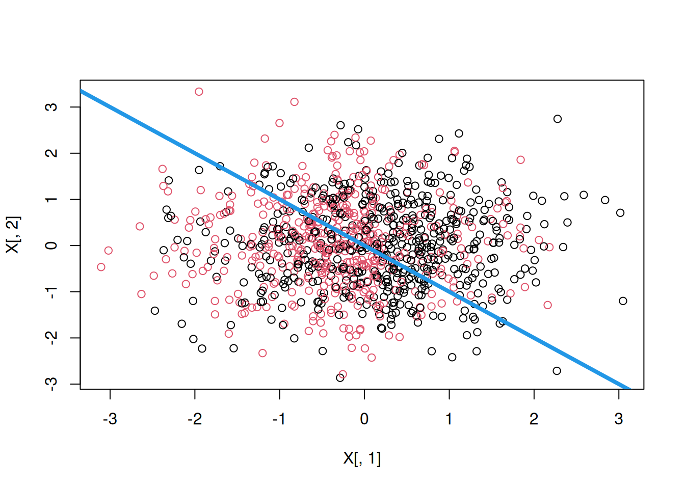

I have a few posts about estimating ATE or CATE. The target has been getting the treatment effect or conditional treatment effect accurately. However, sometimes after estimating the treatment effects, we may be interested in the optimal treatment assignment. For example, a doctor may be interested in how to assign treatment based on patient characteristics. OSHA might be interested in which firms to send inspector to, based on firm characteristics, or past history. We may think we can just assign the treatment to those who benefited most (largest CATE), or any patient who has a positive CATE. However, the objective function for policy is different from the CATE target.
Suppose we have {Y(0), Y(1), X} and we have estimated the CATE as \(\tau(x)=E[Y(1)-Y(0)|X=x]\). The policy learning problem is to find a policy function that assigns treatment to maximize some utility function.
Suppose that policy is \[
\pi \ : \ X \rightarrow \{0,1\}
\] This policy is to assign treatment or control based on \(X\).
The natural objective function is a value function \(V(\pi) = E[Y_i(\pi(X_i))]\), which is the expected value of outcome with this policy. We’d like to maximize this function.
\[
V(\pi) = E[Y_i(\pi(X_i))] = E[Y_i(0)] + E[\tau(X) \pi(X))]
\] Since \(\pi\) only enters through \(E[\tau(X)\pi(X)]\), the maximizer is exactly \(\pi(X) = 1\{\tau(X) > 0\}\) — treat everyone with a positive effect. A threshold \(c \neq 0\) is not a free choice here: it appears once treatment is costly, where maximizing \(E[(\tau(X) - c)\pi(X)]\) gives the rule \(\tau(X) > c\) with \(c\) the per-unit cost. However, estimating \(\tau(X)\) is different from maximizing \(V\).
First, we don’t have the true \(\tau\). The loss function in estimating \(\tau(X)\) is different from the loss function in maximizing \(V\). The loss function in estimating \(\tau(X)\) is the squared error loss. We’ll see maximizing \(V\) is a different problem.
Second, the \(X\) we use to estimate \(\tau\) is different from the ones we can use for policy. For example, we have some variables used in CATE estimation that we cannot use for policy, like gender, or age, for discrimination reasons. Or there are variables we have after the experiment that we cannot use for CATE estimation, but we’d like to use for policy learning.
31.2 IPW loss
Kitagawa and Tetenov (2018) proposed a loss function for policy learning. The loss function is based on the inverse propensity weighting.
This is to say when we have \(W_i=\pi(X_i)\), we can use the outcome \(Y_i\) to estimate the value function. That is, when we have a policy, we then select the observations that matches that policy then weight the outcome by the inverse propensity score. This is to adjust the fact the there is selection bias for that policy. Therefore we re-weight it by IPW.
Obviously we don’t have the true propensity score of \(W_i=\pi(X_i)\), so we need to estimate it. We can estimate it by machine learning.
31.3 AIPW loss
The IPW loss can be not robust to model misspecification. Athey and Wager (2021) proposed a loss function that is robust to model misspecification. The loss function is based on the doubly robust estimator, AIPW.
Note the \(\Gamma_i\) is the score from the AIPW estimator. It’s basically the efficient influence function we learned from the nonparametric estimation of ATE. The value function \(\hat V(\pi)\) is the score if treated, minus the score if control for each observation. We’d like to maximize this value function.
The basic idea is for each policy, calculate the score from AIPW estimator. Then calculate the value function. Then search over the policy space for the policy that maximizes the value function.
This is very computationally intensive task. Right now seems it would work for “shallow” trees. That is, we allow 2 or 3 levels of trees. Otherwise, the search space could be too large to search.
plot(X[, 1], X[, 2], col =pp)abline(0, -1, lwd =4, col =4)

In the example, first “causal_forest” is used to estimate the CATE. “double_robust_scores” is used to calculate the AIPW score. Then “policy_tree” is used to estimate the policy tree. The level of tree is set to 2.
---title: "Policy learning by policytree"date: "2024-03-22"---## Optimal policyI have a few posts about estimating ATE or CATE. The target has been getting the treatment effect or conditional treatment effect accurately. However, sometimes after estimating the treatment effects, we may be interested in the optimal treatment assignment. For example, a doctor may be interested in how to assign treatment based on patient characteristics. OSHA might be interested in which firms to send inspector to, based on firm characteristics, or past history. We may think we can just assign the treatment to those who benefited most (largest CATE), or any patient who has a positive CATE. However, the objective function for policy is different from the CATE target.Suppose we have {Y(0), Y(1), X} and we have estimated the CATE as $\tau(x)=E[Y(1)-Y(0)|X=x]$. The policy learning problem is to find a policy function that assigns treatment to maximize some utility function.Suppose that policy is$$\pi \ : \ X \rightarrow \{0,1\}$$This policy is to assign treatment or control based on $X$.The natural objective function is a value function $V(\pi) = E[Y_i(\pi(X_i))]$, which is the expected value of outcome with this policy. We'd like to maximize this function.$$V(\pi) = E[Y_i(\pi(X_i))] = E[Y_i(0)] + E[\tau(X) \pi(X))]$$Since $\pi$ only enters through $E[\tau(X)\pi(X)]$, the maximizer is exactly$\pi(X) = 1\{\tau(X) > 0\}$ --- treat everyone with a positive effect. Athreshold $c \neq 0$ is not a free choice here: it appears once treatment iscostly, where maximizing $E[(\tau(X) - c)\pi(X)]$ gives the rule$\tau(X) > c$ with $c$ the per-unit cost. However, estimating $\tau(X)$ is different from maximizing $V$.First, we don't have the true $\tau$. The loss function in estimating $\tau(X)$ is different from the loss function in maximizing $V$. The loss function in estimating $\tau(X)$ is the squared error loss. We'll see maximizing $V$ is a different problem.Second, the $X$ we use to estimate $\tau$ is different from the ones we can use for policy. For example, we have some variables used in CATE estimation that we cannot use for policy, like gender, or age, for discrimination reasons. Or there are variables we have after the experiment that we cannot use for CATE estimation, but we'd like to use for policy learning.## IPW lossKitagawa and Tetenov (2018) proposed a loss function for policy learning. The loss function is based on the inverse propensity weighting.$$\hat \pi = argmax \{ \hat V(\pi) : \pi \in \Pi \}$$$$ \hat V(\pi) = \frac{1}{n} \sum_{i=1}^n \frac{1({W_i=\pi(X_i)})} {P[W_i=\pi(X_i) | X_i]} Y_i$$This is to say when we have $W_i=\pi(X_i)$, we can use the outcome $Y_i$ to estimate the value function. That is, when we have a policy, we then select the observations that matches that policy then weight the outcome by the inverse propensity score. This is to adjust the fact the there is selection bias for that policy. Therefore we re-weight it by IPW.Obviously we don't have the true propensity score of $W_i=\pi(X_i)$, so we need to estimate it. We can estimate it by machine learning.## AIPW lossThe IPW loss can be not robust to model misspecification. Athey and Wager (2021) proposed a loss function that is robust to model misspecification. The loss function is based on the doubly robust estimator, AIPW.$$\hat \pi = argmax \{ \hat V(\pi) : \pi \in \Pi \}$$$$ \hat V(\pi) = \frac{1}{n} \sum_{i=1}^n (2\pi(X_i)-1) \hat \Gamma_i$$$$ \Gamma_i = \hat \mu(1)(X_i) - \hat \mu(0)(X_i) + \frac{W_i}{\hat e(X_i)}(Y_i - \hat \mu(1) (X_i)) - \frac{1-W_i}{1-\hat e(X_i)}(Y_i - \hat \mu(0) (X_i))$$Note the $\Gamma_i$ is the score from the AIPW estimator. It's basically the efficient influence function we learned from the nonparametric estimation of ATE. The value function $\hat V(\pi)$ is the score if treated, minus the score if control for each observation. We'd like to maximize this value function.The basic idea is for each policy, calculate the score from AIPW estimator. Then calculate the value function. Then search over the policy space for the policy that maximizes the value function.This is very computationally intensive task. Right now seems it would work for "shallow" trees. That is, we allow 2 or 3 levels of trees. Otherwise, the search space could be too large to search.## Policytree```{r}#| echo: true#| message: falselibrary(grf)library(policytree)library(DiagrammeR)n <-1000p <-10X <-matrix(rnorm(n * p), n, p)ee <-1/ (1+exp(X[, 3]))tt <-1/ (1+exp((X[, 1] + X[, 2]) /2)) -0.5W <-rbinom(n, 1, ee)Y <- X[, 3] + W * tt +rnorm(n)cf <-causal_forest(X, Y, W)plot(tt, predict(cf)$predictions)dr <-double_robust_scores(cf)tree <-policy_tree(X, dr, 2)treepp <-predict(tree, X)boxplot(tt ~ pp)plot(tree)plot(X[, 1], X[, 2], col = pp)abline(0, -1, lwd =4, col =4)```In the example, first "causal_forest" is used to estimate the CATE. "double_robust_scores" is used to calculate the AIPW score. Then "policy_tree" is used to estimate the policy tree. The level of tree is set to 2.---<!-- see-also-footer -->*Systematic treatment: [R](https://xiangao.github.io/causal_econometrics_guide/heterogeneous-effects.html) · [Julia](https://xiangao.github.io/causal_econometrics_julia/heterogeneous-effects.html).*